Ganhe moedas em atividades verificadas, acompanhe sua carteira e monte seu personagem com itens, animações e efeitos.
✓ preços validados✓ extrato rastreável✓ módulos sob demanda
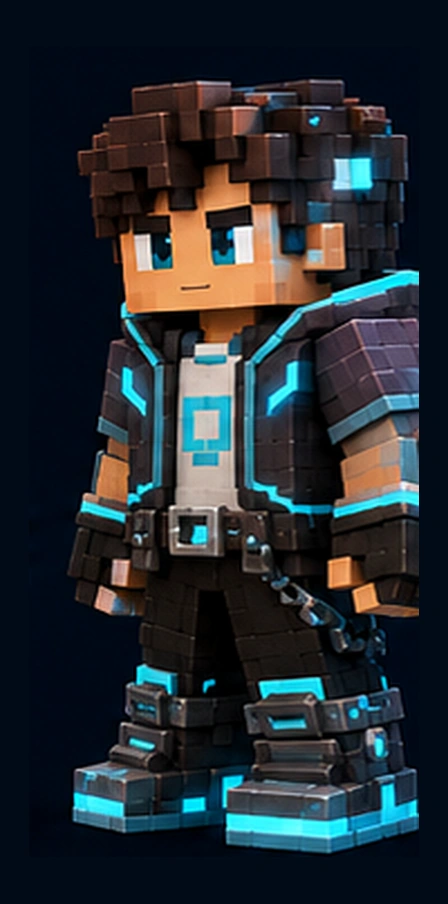
✦Aura épica
▣3 itens equipados
Carteira Virtual DS
Saldo de moedas
0moedas disponíveis
Em análise0
Reservado0
Integridade900/1000
Acesso rápido
Continue de onde parou
Destaques
Itens recomendados
Catálogo oficial
Loja Virtual DS
Itens padronizados, preços oficiais e prévias carregadas somente quando solicitadas.
Oferta da rodada
Aura Solar Lendária
Efeito premium com partículas verticais e brilho dinâmico.
60% OFFencerra em 29:59
0 itensCarregamento visual otimizado
Economia virtual auditável
Carteira Virtual DS
Saldo calculado pelo livro-caixa, análises proporcionais ao valor e informações detalhadas apenas quando solicitadas.
Saldo disponívelLiberado
0
Moedas confirmadas e prontas para uso
Reservado0Compras em processamento
Pendente0Recompensas aguardando emissão
Em análise0Validação ampliada em andamento
Bloqueado0Valores não liberados
Resumo
Movimentação
Total recebido0
Total gasto0
Transações0
Validação proporcional
O tempo de análise acompanha o valor
Operações comuns são verificadas rapidamente. Créditos elevados, crescimento anormal e checkpoints de carteira entram em análise ampliada.
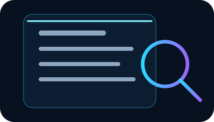
Últimas movimentações
Extrato rastreável
Rastreamento técnico
Cada operação possui identificador único, origem, evidência, estado, saldo anterior e posterior, referência ao hash anterior e hash próprio. O DOM nunca é fonte de preço ou saldo.
Marcos financeiros
Checkpoints da carteira
0 validados
Processamento e revisão
Central de validação
Operações em análise, checkpoints, riscos detectados e decisões pedagógicas organizadas sem poluir a carteira principal.
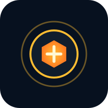
Revisões pendentes00 moedas em análise
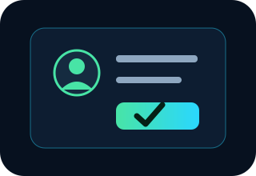
Decisão pedagógica0Somente quando realmente necessária
✓
Hash do livro-caixaÍntegroÚltima auditoria: —
Fila atual
Operações aguardando análise
0 pendentes
Política oficial
Tempos máximos de verificação
Na demonstração, as animações são aceleradas. Em integração real, o módulo registra o tempo-alvo e pode aguardar confirmação externa sem bloquear a atividade pedagógica.
Segurança pedagógica
Advertências e penalidades
1ª ocorrência confirmadaAdvertência e orientação, sem multa automática.ReincidênciasMultas progressivas de 10%, 30% e 50%, com limites máximos.Revisão humanaNenhuma penalidade é aplicada apenas por abrir o inspetor ou por falha técnica.
Integração universal v0.9.0
SDK e adaptadores das plataformas
As plataformas enviam eventos educacionais padronizados. A Loja Virtual DS valida, evita duplicidade, registra a origem e responde com saldo liberado, em análise, na fila ou recusado.
Resultado padronizadoNenhum evento enviadoO retorno aparecerá aqui sem alterar diretamente o HTML ou o saldo.
Registro da integração
Eventos enviados nesta sessão
Contratos independentes
Adaptadores disponíveis
Cada plataforma usa apenas seus próprios eventos; ferramentas e módulos de sistemas diferentes não são misturados.
Coleção e acesso rápido
Inventário e Mochila DS
O Inventário Geral guarda toda a coleção. A Mochila DS mantém somente atalhos leves para uso imediato em qualquer plataforma integrada.
Equipamento atual sincronizado
Conjunto equipado
Esta prévia usa a mesma fonte de estado do Perfil, Personagem 3D, Loja e Exibição DS. Alterações aparecem em todas as áreas sem duplicar o inventário.
▣
Nenhum item nesta categoria
Explore a loja ou conclua atividades para ampliar sua coleção.
Acesso rápido persistente
Mochila DS
Organize itens, animações e mensagens sem copiar modelos 3D. A mochila salva apenas IDs e carrega o GLB original quando uma experiência realmente precisar dele.
Salvamento automático
Espaços usados8
Até 6 atalhos
Animações rápidas
Falas do personagem
Mensagens rápidas
Persistência completa da personalização
Recuperação do perfil
O sistema mantém checkpoints do personagem, mochila e preferências. Carteira, extrato e integridade permanecem protegidos e não são substituídos por arquivos importados.
Último salvamentoAguardandoCheckpoints0
Modelo tridimensional real
Personagem 3D e visualização 360°
Avatar voxel original em GLB com Rig Humanoide 2.0, articulações intermediárias, 28 animações, LOD e slots equipáveis.
Visualizador WebGL IntermediárioInicializando...
Olá!
Carregando avatar GLBGeometria, materiais, rig e animações
Arraste para girar • use a roda para aproximar Modelo GLB real com animações em nós
Contrato 3D
Estrutura pronta para todas as plataformas
FormatoGLB / glTF 2.0
RigDS_HUMANOID_VOXEL_RIG_2
Animações28 clips
LOD0, 1 e 2
Articulações10 novos bones
Slots16 pontos oficiais
FallbackWebP 2D
Catálogo 3D consolidado
36 modelos tridimensionais equipáveis
Os arquivos são independentes e carregados somente ao selecionar, experimentar ou equipar.
Resumo de personalização, progresso e integridade. Informações detalhadas permanecem recolhidas até serem solicitadas.
Nível 12
Estudante DS
Perfil demonstrativo da Loja Virtual DS.
Desenvolvimento de SistemasPerfil localIntegridade privada
Carregando conjunto equipado...
Moedas disponíveis0
Itens no inventário0
Itens na Mochila DS0
Integridade900
Transações0
Acessos do perfil
Gerenciar
Estúdio visual consolidado
Animações, auras e VFX
Pacotes modulares carregados apenas ao solicitar uma prévia ou utilizar um efeito.
Prévia em tempo real
Aura Ascendente Épica
engine ativo
Olá!
Canvas adaptativopartículas conforme qualidaderedução de movimento
Catálogo interativo
Efeitos disponíveis
Falas rápidas
Balões animados do personagem
Clips adicionados ao GLB
Animações educacionais
Auditoria privada
Integridade do perfil
Resumo da coerência entre carteira, extrato, inventário e eventos de recompensa.
900/1000
Integridade estável
Indicador privado, sem ranking público e sem impacto automático em nota escolar.
Componentes
Estado atual
Verificado
Histórico
Eventos de integridade
v0.9.6.0-RG • diagnóstico por dispositivo
Benchmark DS Avançado
Teste CPU, GPU, shaders, texturas, partículas, frames e armazenamento. O resultado recomenda um modo, mas não instala pacotes nem altera sua preferência sem autorização.
Estado do teste
Pronto para testar
O benchmark não baixa pacotes nem altera sua qualidade automaticamente.
Os mesmos GLBs, rig e animações recebem ambientes LDR 2K, mapas de microdetalhe 1K e palcos Full HD carregados somente quando Ultra ou Realismo são ativados.
Renderer LiteBásico e Intermediário • sem pacote premium.
Renderer CinematicRealismo • ambiente 2K, detalhe 1K e clearcoat simulado.
Ativo agoraRenderer Lite
Pipeline1 luz • shader leve
MotivoConforme qualidade selecionada
FidelidadeMesmo GLB, rig, materiais-base e animações
Pacote premiumNão solicitado
EstadoAguardando modo premium
RecursosAmbiente 2K • detalhe 1K • palco Full HD
Pipeline 3D v0.9.6.0-RG
Transferência sem perda visual
Os mesmos GLBs, materiais, slots e animações são entregues em Gzip e reconstruídos byte a byte antes da renderização. Navegadores incompatíveis usam o arquivo original.
Carregando manifesto...
GLBs39Original—Transferência—Redução—
Ajuste em tempo real
Qualidade sem travamentos
O modo Automático usa o benchmark salvo e o FPS da sessão. Ele reduz primeiro resolução e partículas, preservando texturas e equipamentos sempre que possível.
Benchmark→FPS→Resolução→Partículas→LOD
v0.9.6.0-RG • modos gráficos oficiais
Pacotes gráficos
Prepare apenas a qualidade e os módulos que deseja usar. Pacotes altos ficam no cache deste dispositivo e não prejudicam quem prefere mais FPS.
Modo ativo—Verificando pacotesPacotes preparados0por dispositivoArmazenamentoEstimando...
PersistênciaVerificando...reduz o risco de limpeza automática
Preferência do usuário
Escolha o equilíbrio da experiência
Instalar um pacote superior não obriga o sistema a usá-lo o tempo todo.
Cache e Memória 2.0
Recursos ativos e liberação inteligente
Memória estável
Memória rastreada0 B
Orçamento atual128 MBadaptado ao modo gráficoRecursos ativos0modelos, partículas e módulosPressãoEstávelheap não exposto
Política local
Controle de orçamento e descarte
O sistema preserva o personagem equipado e libera apenas buffers temporários, prévias e efeitos que não estão em uso.
LRU em tempo real
Recursos mais recentes
Diagnóstico local
Eventos de memória
Instalação modular
Níveis e módulos disponíveis
1Benchmark recomendanenhum pacote pesado é baixado sozinho
→
2Usuário preparatamanho e dependências aparecem antes
→
3Cache persistentearquivos ficam disponíveis nas outras áreas
→
4Motor adaptaqualidade e FPS continuam independentes
Biblioteca reutilizável
Componentes oficiais
Elementos visuais preparados para uso uniforme em todas as plataformas.
Botões
Ações
Estados
Chips
AutorizadaEm análiseBloqueadaÉpico
Carregamento
On-demand
Solicitando pacote...
Feedback
Transação
✓
Compra autorizadaItem enviado ao inventário
Raridades
Molduras oficiais
Descontos
Faixas oficiais
Performance adaptativa
Arquitetura modular
O shell abre leve; loja, inventário, personagem, animações e laboratórios carregam conforme o uso.
Política de assets
Contratos técnicos
ModelosGLB / glTF 2.0
GeometriaMeshopt / Draco
Texturas 3DKTX2 / BasisU
PréviasWebP / PNG
ÍconesSVG
CarregamentoSob demanda
Kit Gráfico Oficial
Assets padronizados
Elementos vetoriais, miniaturas WebP, moedas, raridades e materiais prontos para importação nas plataformas.
Economia
Moedas e estados
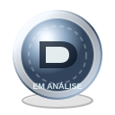
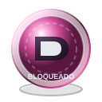
Coleções
Baús por raridade
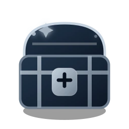
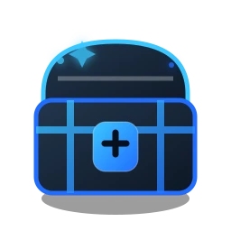
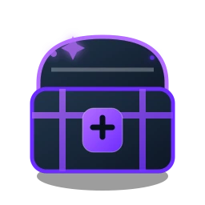
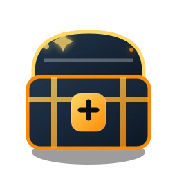
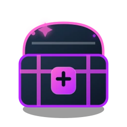
Materiais
Texturas oficiais
Catálogo
Miniaturas reais
Processamento
Animações vetoriais
Referência aprovada
Direção visual
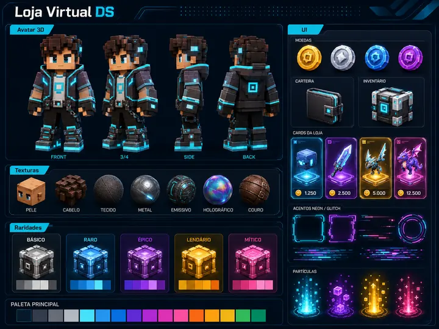
Qualidade-alvo das próximas fases.
Prévias VFX
Prévias de efeitos reais
Experiência gráfica
Prévia
Prévia vetorial oficialIntermediário
Carregando pacote de préviaPreparando texturas e animações...
GLB real sob demanda quando disponível • fallback vetorial automático
Raro
Produto
Slot—
Pacote—
Tipo—
Preço oficial0 DS
Oferta da rodada0 DS
Processamento seguro e coerente
Validando transação
Conferindo preço, saldo, histórico e destino do item.
Conteúdo do pacote
Pacote
Olá!
Exibição DS
Mostre seu personagem equipado
A apresentação utiliza o mesmo loadout salvo. A versão rápida é leve; o botão 3D abre o GLB completo com as mesmas peças.